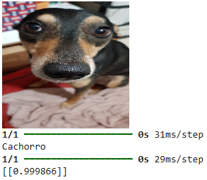

Pedro Paulo
Data Scientist • Machine Learning • Computer Vision
Estudei Ciência de Dados na Impacta. Desenvolvo projetos com Inteligência Artificial, Deep Learning, Machine Learning e Visão Computacional.
Estudei Ciência de Dados na Impacta. Desenvolvo projetos com Inteligência Artificial, Deep Learning, Machine Learning e Visão Computacional.
Desenvolvo soluções usando Python, TensorFlow, OpenCV, Pandas, Scikit-Learn e técnicas de Inteligência Artificial aplicadas a problemas reais.
